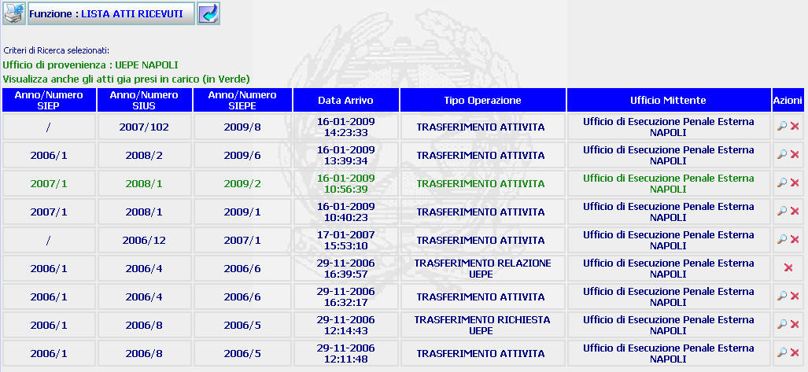

LISTA ATTI RICEVUTI SIEPE: La funzione consente di visualizzare gli atti ricevuti telematicamente dagli uffici.
LE MASCHERE VIDEO
La funzione in esame, viene realizzata attraverso l'utilizzo della maschera che segue.

Da notare che gli atti già presi in carico sono evidenziati in VERDE.
N.B. Nell'esempio è stata riportata la lista atti ricevuti dall'UEPE di Napoli, ovviamente, il mittente cambia in base ai parametri di RICERCA ATTI SIEPE impostati.
COME FARE PER ...
| Per visualizzare il dettaglio
di un atto ricevuto che l'utente deve prendere in carico, oppure, visualizzarne
uno già preso, occorre
agire sul pulsante di
dettaglio dell'atto ricevuto
| |
| Per eliminare la voce
corrispondente occorre
agire sul pulsante di cancellazione
|
CAMPI
La maschera non presenta campi da compilare, ma visualizza semplicemente l'elenco degli atti ricevuti i cui dati non possono essere modificati.
PULSANTI
Oltre ai i pulsanti
 ,
,
 facenti parte del gruppo
di
pulsanti di "Uso Comune"
sono presenti i
seguenti pulsanti:
facenti parte del gruppo
di
pulsanti di "Uso Comune"
sono presenti i
seguenti pulsanti:
|
PULSANTE |
DESCRIZIONE |
|
|
Questo pulsante ha lo scopo di visualizzare, nel dettaglio, l'atto ricevuto telematicamente e fa parte del gruppo di pulsanti di "Uso Comune" |
|
|
Questo pulsante ha
lo scopo di consentire la cancellazione dei dati dalla maschera
visualizzata |